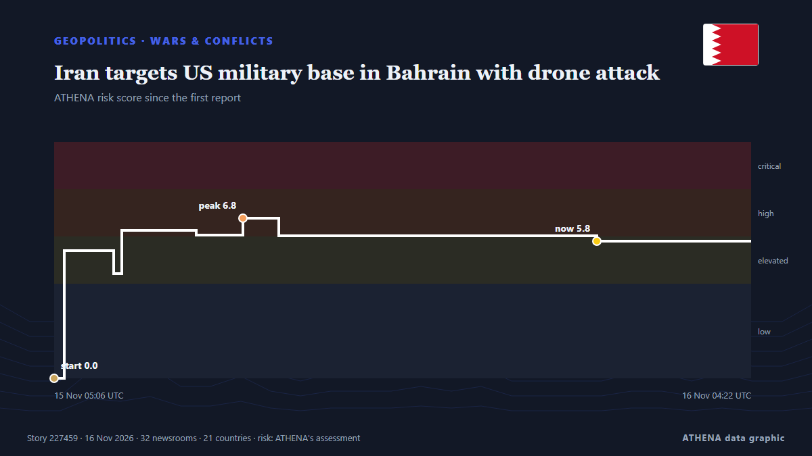

Iran targets US military base in Bahrain with drone attack

It marks the second attack on the country in three days and comes as the US and Iran remain locked in a stand-off over the Strait of Hormuz. de BBC News
Relayé de façon indépendante par 33 médias dans 22 pays depuis le 15 nov. ; premier à l'annoncer : Oman Observer ; la couverture faiblit. ATHENA juge le risque accru (5.8/10), surtout en raison de la gravité des dommages décrits et de sa portée géographique et sectorielle. La confiance est de 91 % (élevée) : 33 médias indépendants le confirment, avec une fiabilité moyenne des sources de 75 %. Médias par pays : Nigeria (4), Royaume-Uni (3), Irak (2). Couverture : du 15 nov. au 16 nov., 31 heures.
Pourquoi c'est important: Les évolutions de sécurité et de diplomatie peuvent déplacer alliances, échanges et marchés bien au-delà des pays directement concernés.
Ce qui a changé : 20 nouveaux articles de 19 rédactions dans les 24 heures jusqu'au 16 nov..
Premier titre : Urgent: Iran's IRGC says drones hit U.S. air defense radar station in Bahrain
AutomatiséSélectionné, regroupé et noté selon la méthode publiée d'ATHENA à partir de 32 médias indépendants. Le titre est celui du média ; les phrases d'ATHENA suivent des modèles fixes - aucune IA générative ne les rédige. Comment ça marche →
Comment lire cette page
- Ce que vous lisez
- 33 médias dans 22 pays ont rapporté cet événement. Les reportages ci-dessous sont classés selon leur ordre de parution ; chaque titre ouvre l'article original. ATHENA n'écrit aucun reportage.
- Notre lecture
- Sous surveillance — Les reportages décrivent une action, ou une décision encore à prendre, entre des États ou des groupes armés. ATHENA suit la suite des événements. Nous guettons quatre types d'évolution : rien de plus, une action ouverte et revendiquée, une action menée par des tiers ou sans revendication, et un accident ou un malentendu. Nous ne prédisons pas lequel se produira.
- Quelle base de preuves
- Solide De nombreux médias indépendants, dans de nombreux pays, décrivent le même événement.
Après retrait des doublons, des éléments hors sujet et périmés, 27 des 35 reportages listés sont retenus ; 97 % des titres correspondent à l'événement.
Plusieurs titres relaient des affirmations d'un camp. Une affirmation n'est pas un fait confirmé.
- Ce que cela ne veut pas dire
- ATHENA mesure la façon dont un événement est rapporté, pas sa véracité. Ce n'est ni une prévision, ni un jugement sur qui a raison, ni un conseil.
- Ce qui la changerait
- Des reportages d'autres médias indépendants montrant une évolution différente, ou une confirmation ou un démenti ferme d'une source officielle.
Lecture R2 · actualisée à chaque mise à jour de cette page. ATHENA n'a pas encore publié de bilan de ces lectures ; il sera lié ici le moment venu.
En un coup d'œil
Sélectionné, noté et rédigé par la méthodologie publiée d'ATHENA. Aucun rédacteur n'intervient sur un événement en particulier. Comment il est produit ›
| 15 Nov 01:13 UTC | 1 |
|---|---|
| 15 Nov 03:13 UTC | 5 |
| 15 Nov 05:13 UTC | 10 |
| 15 Nov 07:13 UTC | 4 |
| 15 Nov 09:13 UTC | 5 |
| 15 Nov 11:13 UTC | 1 |
| 15 Nov 13:13 UTC | 2 |
| 15 Nov 15:13 UTC | 3 |
| 15 Nov 17:13 UTC | 2 |
| 15 Nov 19:13 UTC | 0 |
| 15 Nov 21:13 UTC | 1 |
| 15 Nov 23:13 UTC | 1 |
| 16 Nov 01:13 UTC | 1 |
| 16 Nov 03:13 UTC | 1 |
| 16 Nov 05:13 UTC | 0 |
| 16 Nov 07:13 UTC | 1 |
| 15 Nov 05:06 UTC | 0.0 |
|---|---|
| 15 Nov 05:26 UTC | 5.4 |
| 15 Nov 07:05 UTC | 4.4 |
| 15 Nov 07:22 UTC | 6.3 |
| 15 Nov 09:51 UTC | 6.1 |
| 15 Nov 11:25 UTC | 6.8 |
| 15 Nov 12:36 UTC | 6.0 |
| 15 Nov 23:13 UTC | 5.8 |
| 16 Nov 08:15 UTC | 5.8 |
Pourquoi ces chiffres
Importance
Risque
Confiance
La couverture : qui l'a annoncé, et quand
titre tel que publié · ouvre l'original- Oman Observer · OmanBlasts, sirens in Bahrain as Iran attacks on US base
- Arab Times · KoweïtIran Claims Attack on US Military Base in Bahrain; Report Remains Unverified
- Kurdistan24 (English) · IrakIRGC Says Six Drones Targeted US Air-Defense Radar At Bahrain’s Riffa Base
- Mehr News (English) · IranIRGC's Aerospace targeted US base in Bahrain with 6 drones
- Middle East Eye · INTUS radar facility at Bahrain base attacked with six drones, IRGC claims
- Xinhua (English) — page reader · ChineUrgent: Iran's IRGC says drones hit U.S. air defense radar station in Bahrain
- The Jerusalem Post · IsraëlIran's IRGC launches drone attack on US base in Bahrain, triggering hostile escalation
- IRNA (English) · IranSix drones targeted US air defense radar at Bahrain helicopter base: IRGC
- Shafaq News (English) · IrakIRGC: Six drones targeted US radar in Bahrain
- TASS (English) · RussieIran strikes by UAVs radar infrastructure at US military base in Bahrain — IRGC
- New Straits Times · MalaisieBlasts, sirens rock Bahrain as Iran claims drone attack on US base
- NDTV · IndeBahrain Sounds Alarm For Residents As 6 Iran Drones Attack US Base
- Khaama Press · AfghanistanIran Says It Targeted US Air Defence Radar in Bahrain With Six Drones
- News of Bahrain · BahreïnUS Ambassador says all IRGC drones intercepted, no damage or injuries reported
- APA (English) · AzerbaïdjanIRGC claims drone strike on US air defense radar at Bahrain helicopter base
- Anadolu Agency (English) · TurquieBahrain says its air defenses intercepted several Iranian attacks
- RTÉ News · IrlandeBahrain intercepts Iranian missiles targeting US base
- Channels TV · NigeriaIran Announces Attack On US Base
- TheJournal.ie · IrlandeBlasts in Bahrain as Iran claims attack on US base
- Vanguard · NigeriaIran attacks US military base in Bahrain
- Punch · NigeriaIran attacks US base in Bahrain
- The Guardian · Royaume-UniSaudi Arabia, Qatar, Jordan, Egypt condemn Iranian attack on Bahrain - as it happened
- Middle East Eye · INTIRGC says Bahrain drone strike responded to ‘US aggression’ in southern Iran
- Xinhua (English) — page reader · ChineIran's IRGC says drones hit U.S. air defense radar station in Bahrain
- BBC News · Royaume-UniIran targets US military base in Bahrain with drone attack
- Ada Derana · Sri LankaIran targets US military base in Bahrain with drone attack
- France 24 English · FranceIran claims drone attack on US military base in Bahrain
- Daily Mirror · Sri LankaIran targets US military base in Bahrain with drone attack
- Khmer Times · CambodgeIran drone strike targets US base in Bahrain
- The Guardian · Royaume-UniIran launches drone attacks against US military base in Bahrain
- FXStreet · EspagneIran targets US military base in Bahrain with drone attack
- The Daily Star — page reader · BangladeshIran strikes US base in Bahrain
- Livemint · IndeIran Strikes Bahrain Base, Repeats Path to US Deal Remains Open
- BusinessDay (Nigeria) · NigeriaWORLD IN BRIEF: Iran attacks US base in Bahrain, Angola seeks De Beers stake, AfDB lends Morocco $479m and other stories
- Rigzone · États-UnisIran Says Door to Peace Still Open after Strikes on Bahrain